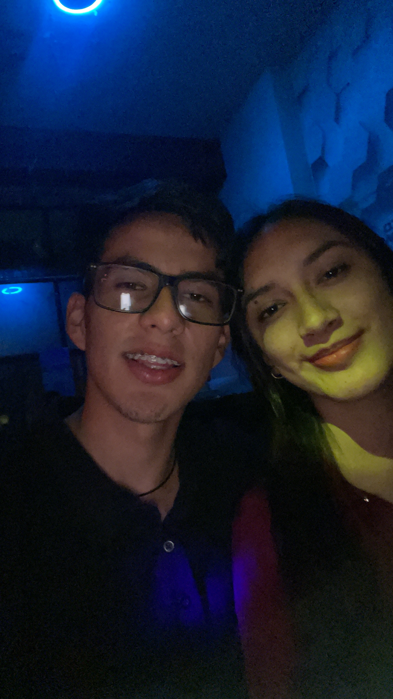
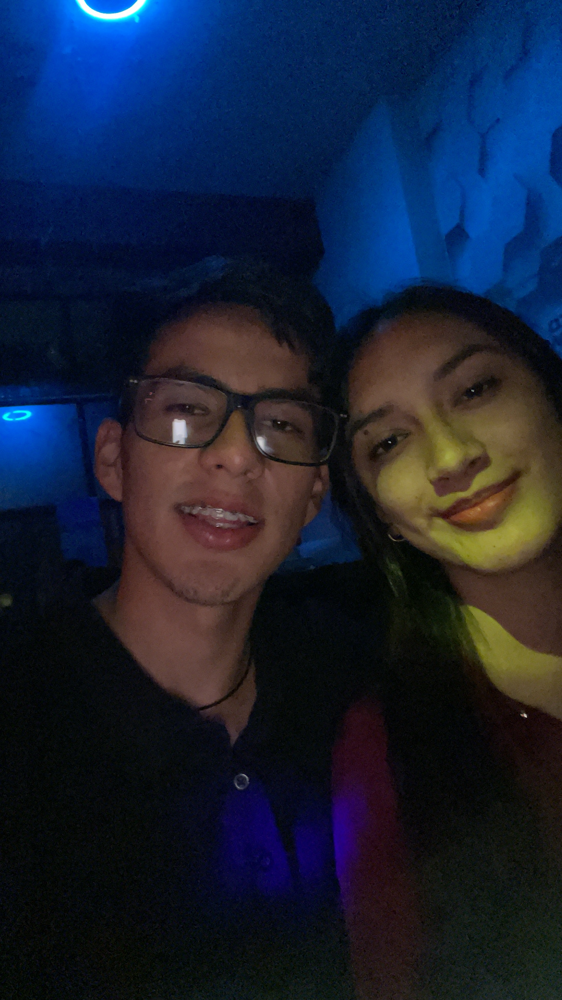

Sin darse cuenta que el tiempo pasó tan
rápido que hoy cumplimos un mes desde que
decidimos escribir esta historia bonita de
amor :3
y hoy se me dio la idea de hacerte este pequeño
detallito, espero te guste, sigue bajando preciosota.
Te quiero porque cada momento a tu lado es un regalo


 



Desde el primer momento que te vi, sentí una sensación
especial en mí. Sentía algo que no suele pasar en mí.
Ese algo fue creciendo poquito a poquito y empezamos a
conocernos y generamos una conexión que no le importó el
tiempo que nos conozcamos, sino esas ganas de quererse
el uno al otro. Hace dos meses que el destino o la
casualidad no juntó, y hoy cumplimos un mes de ese algo
tan bonito que formó. Este pequeño tiempo que compartí
contigo, me has hecho sentir tantas cosas lindas que
no imaginaba llegar a sentir. Has hecho sentir querido
y que tengo a alguien que, sin importar las circunstancias, va a estar conmigo y me va a apoyar en todo. Que tengo a alguien con quien puedo ser yo y que tengo ese cariño incondicional. Contigo lo tengo todo, contigo terminé una etapa y empecé una nueva, contigo lo quiero todo, contigo quiero algo estable, bonito y sobre todo real y duradero. Quiero que me acompañes en lo que resta de la vida, crecer como persona y crecer como pareja. Ahora tú estás incluida en mis planes y sé que en cada uno de ellos vas a estar, en cada meta que cumpla, en cada sueño que tenga, tú estarás ahí, porque te lo has ganado. Te has ganado esa parte mía que nadie más llegó a tener. Te ganaste mi corazón y tienes un lugar en mí que nadie ni nada va a quitarte. Preciosa, no sé cómo agradecerte lo que haces por mí. Créeme que las más pequeñitas cosas para mí tienen un significado muy grande. Ese cariño que me das y esa paz que me genera estar contigo es tan hermosa, que me faltarían palabras para agradecerle a Dios por ponerte en mi vida. No estoy soñando, es real, eres real y eres mi novia y no sabes lo feliz que me siento a tu lado. Fuiste ese pedacito de rompecabezas que me faltaba, tú me complementas, tú me haces sentir el chico más afortunado de este mundo. Eres la persona más increíble y preciosa que he conocido, una mujer y sin duda una excelente mujer y compañera. Te quiero, y es algo que lo digo con el corazón abierto y no me da pena tener que gritarlo si así lo quisieras. Te quiero porque tu sonrisa hermosa ilumina mis días y el amor que me das me llena de tanta felicidad. Porque eres mi compañera, mi apoyo y no podría imaginarme una vida sin ti. Te quiero por todas las pequeñas cosas que haces y por ser quien eres y por lo que juntos hemos construido y vamos a construir, y sobre todo eres el amor de mi vida y estar contigo es lo que más anhelo. Viste que sí puedo ser romántico, mi amor, jaja. Hoy quiero hacerte sentir la mujer más afortunada que el mundo pudo ver y que mis ojitos verán por el resto de tu vida, mi amor, porque sí voy a estar contigo hasta que el destino y Dios lo quieran, así que acostúmbrate, mi amor, jaja. ¿Así o más posesivo? jaja.
Te quiero 3 millones
¡Feliz primer aniversario!